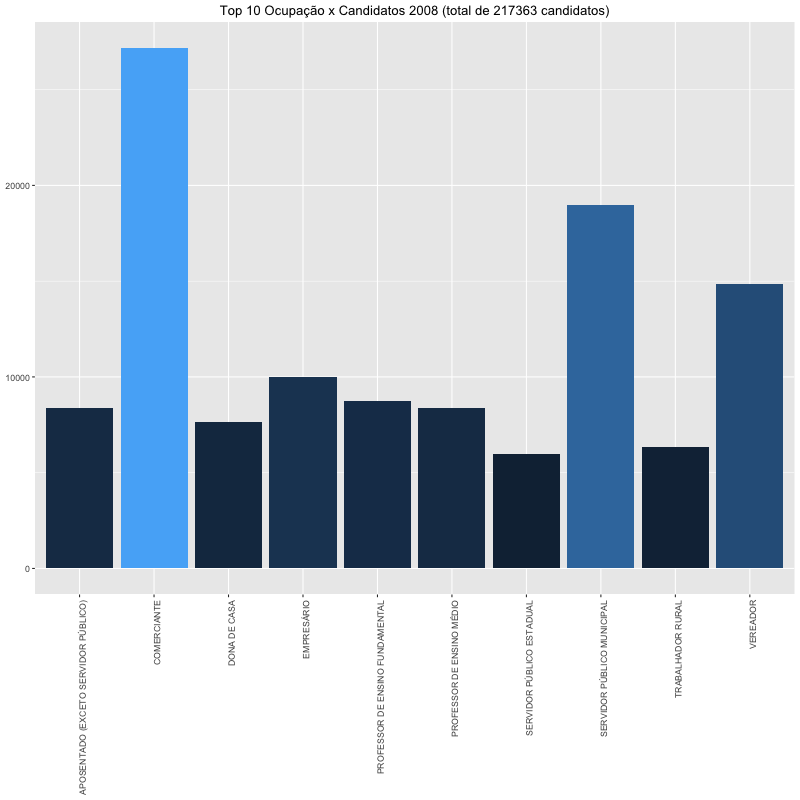
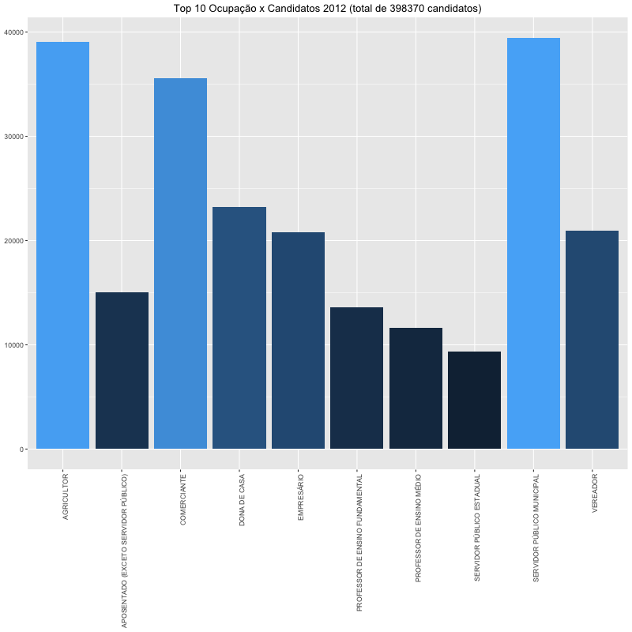
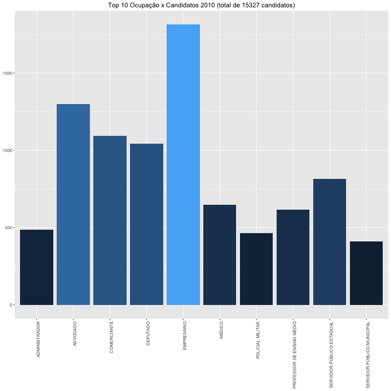
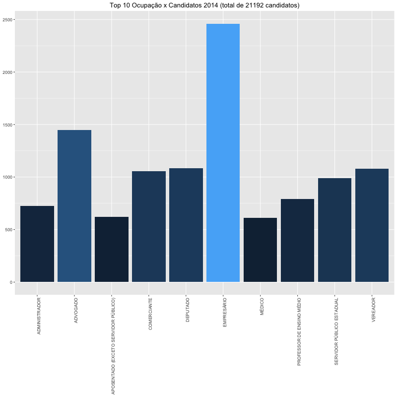
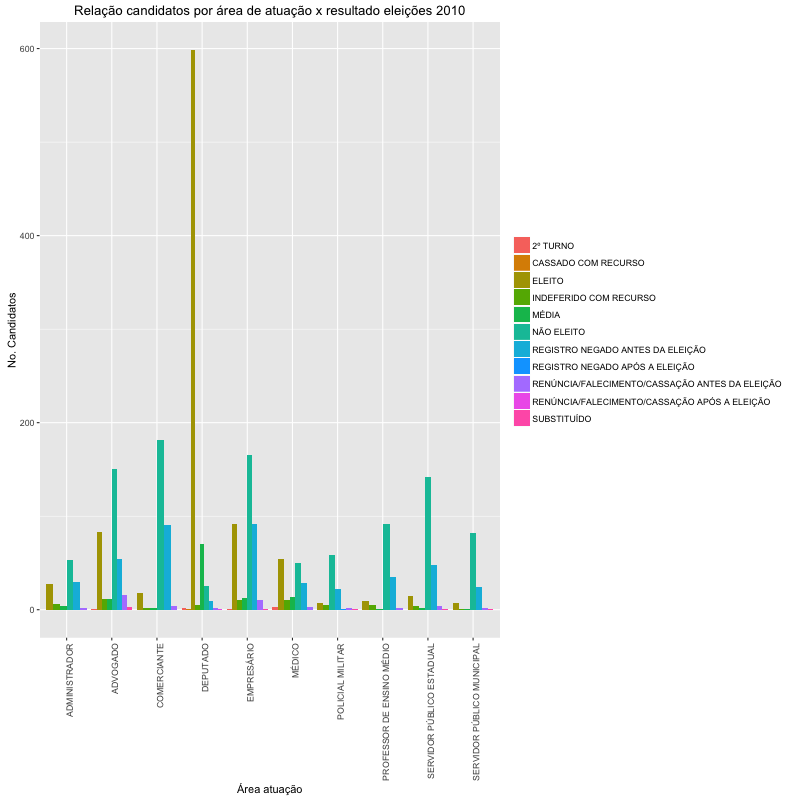
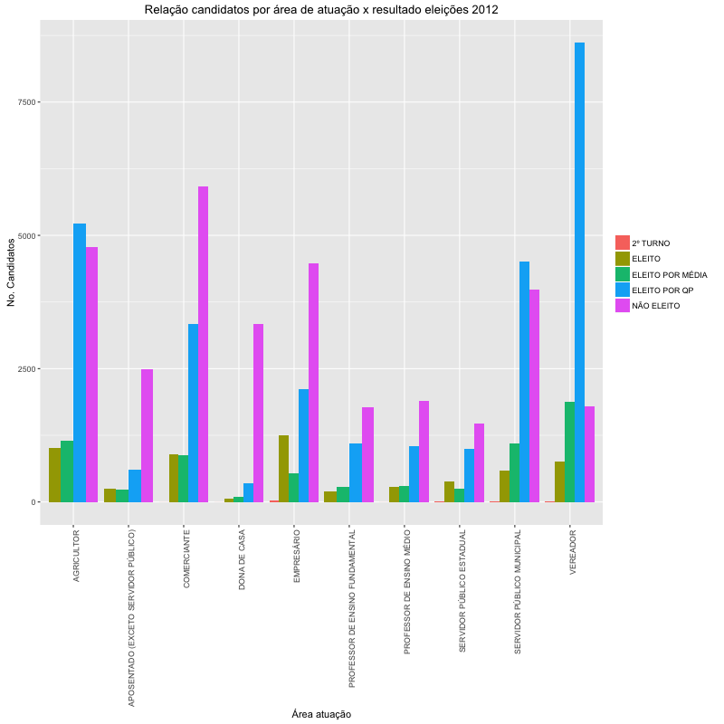
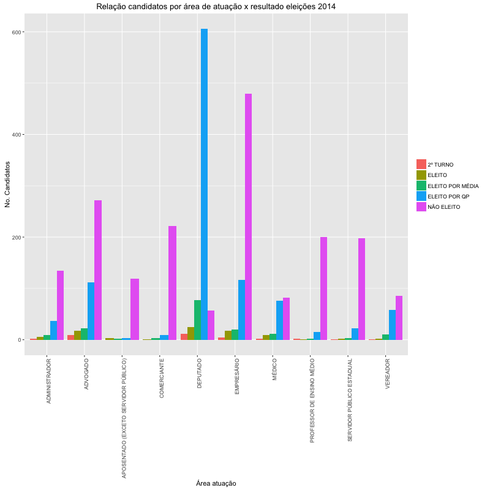

Candidatos-br
Estudo estatístico que verifica transições partidárias, perfil geral de candidatos, patrimônio, etc
View project on GitHub
Número candidados por grupo econômico




Qual o resultado das eleições por grupo econômico?



Authors and Contributors
@seufagner